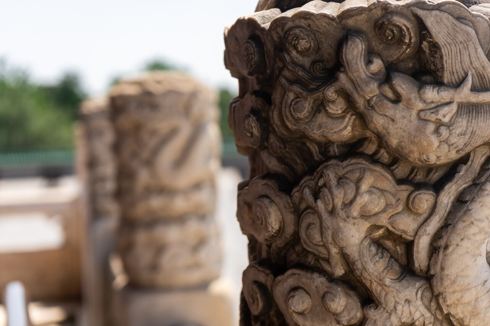
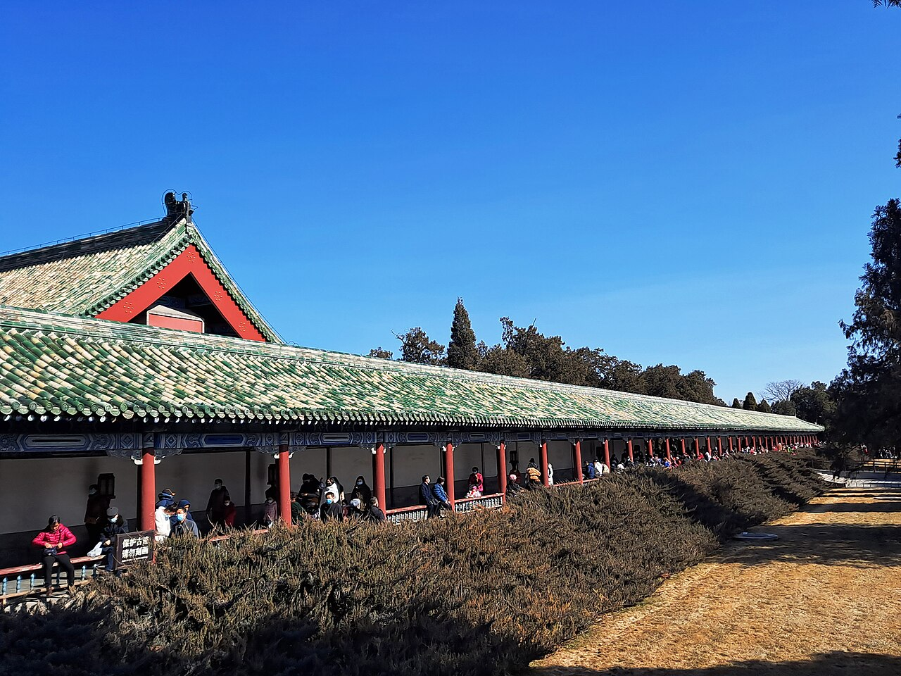

北京 · 明清皇家祭坛 World Heritage · Beijing
天坛
明清两代皇帝祭天、祈谷的坛庙建筑群
天坛位于北京老城东南，始建于明永乐十八年（1420 年），坛域占地约 273 公顷。祈年殿、皇穹宇、圜丘沿内坛南北轴线布置，古柏环抱之间，集中体现了中国古代“天圆地方”的宇宙观与祭天礼制。1998 年，天坛以“北京皇家祭坛——天坛”列入联合国教科文组织《世界遗产名录》。
- 始建
- 1420 年（明永乐十八年）
- 坛域
- 约 273 公顷
- 全国重点文物保护单位
- 1961 年 · 第一批
- 世界遗产名录
- 1998 年列入

建筑巡礼 Along the Axis
一条轴线上的三组建筑
内坛建筑沿南北轴线布置：南端是祭天的圜丘，其正北为皇穹宇，北端祈谷坛上矗立祈年殿，两坛之间由抬高的神道——丹陛桥相连。将鼠标悬停于建筑名称、用 Tab 键聚焦，或直接点按，即可查看照片与第二层介绍。

祈年殿 · 祈谷坛中心
三重檐圆形大殿坐落在三层汉白玉台基之上，上覆蓝色琉璃瓦，是明清皇帝祈求五谷丰登的场所，也是天坛最广为人知的形象。
照片 © xiquinhosilva · CC BY 2.0 · 授权详情见页末「资料来源」
皇穹宇 · 圜丘正北
单檐圆形殿宇，立于汉白玉台基之上，平日供奉“皇天上帝”神版；殿宇院落的圆形围墙，就是人们常说的“回音壁”。
照片 © xiquinhosilva · CC BY 2.0 · 授权详情见页末「资料来源」

圜丘 · 内坛南端
三层圆形露天石台，四周环以汉白玉栏杆，是明清皇帝于冬至举行祭天大典的场所，与北端祈年殿遥相呼应。
照片 © xiquinhosilva · CC BY 2.0 · 授权详情见页末「资料来源」
注：轴线与建筑相对位置为示意，非测绘地图。建筑与布局事实整理自北京市文物局与联合国教科文组织世界遗产中心公开资料。
传承 · 保护 · 公众使用 Living Heritage
从皇家祭坛，到活着的遗产
六百年坛庙如何延续至今？第一层是三张主题卡片：照片、标题与一句话摘要。悬停、用 Tab 键聚焦，或点按「展开详情」，即可查看第二层的事实与来源链接。

保护
从首批全国重点文物保护单位，到三维扫描留存的数字档案。
1961 年，天坛被列为第一批全国重点文物保护单位；1998 年以“北京皇家祭坛——天坛”列入联合国教科文组织《世界遗产名录》。
据 2025 年 7 月公开报道，天坛正以三维扫描为古建筑建立记录档案，对圜丘建筑群开展数据可视化采集，并推进中和韶乐的数字化记录与可移动文物保护；日常保护还包括古建修缮、遗产监测与古树名木养护。

公众使用
从皇家祭坛到城市公园——花展、非遗展演、科普与 AR 文创。
如今的天坛既是世界文化遗产，也是市民晨练、休闲的城市公园。据 2025 年 7 月公开报道，园内结合古建、古树与观鸟资源举办花展、非遗展演与科普活动，并推出“智慧天坛科普创意教具展”。
园方还以 AR 等新技术开发文创产品，让祭天文化以可感可知的新媒介走近公众——在保护文物的前提下服务公众，正是遗产“利用”的题中之义。
资料来源与授权 Sources & Credits
资料来源与照片授权
事实均整理自 2025—2026 年公开资料，发布日期以来源页面为准；照片为 Wikimedia Commons 授权摄影作品，逐张署名如下。
展开：事实资料 · 交互灵感 · 照片授权
事实资料
- 北京市文物局「文博数据 · 北京地区世界文化遗产」：《天坛》——始建年代、坛域范围与代表建筑。wwj.beijing.gov.cn
- 联合国教科文组织世界遗产中心：《Temple of Heaven: an Imperial Sacrificial Altar in Beijing》（名录第 881 号）——轴线布局、1961 年与 1998 年保护状况。whc.unesco.org/en/list/881
- 中国非物质文化遗产网：《天坛神乐署中和韶乐》——2021 年第五批国家级非物质文化遗产、“八音”16 种乐器与传承保护单位。ihchina.cn
- 首都之窗（2025-07-28）：天坛三维扫描建档、圜丘建筑群数据可视化采集、中和韶乐数字化记录与公众文化活动报道。beijing.gov.cn
- 天坛公园官方网站（2026-02-11）：神乐署重新开放暨“天坛神乐署中和韶乐展”展讯。tiantanpark.cn
交互设计灵感
- Creative Link Effects（Codrops, 2013）——导航下划线浮现与括号滑入效果的灵感。tympanus.net/codrops
- Inspiration for Inline Anchor Styles（Codrops, 2014）——正文内嵌链接背景高亮效果的灵感。tympanus.net/codrops
- Image Reveal Hover Effects（Codrops, 2018）——建筑名称悬停显现照片的视觉思路。tympanus.net/codrops
以上仅以纯 CSS 重新实现交互思路，未复制其代码、素材，也未引入任何 JavaScript 依赖。
照片授权（共 6 张，均来自 Wikimedia Commons）
- 祈年殿·冬日 © Lloyd Tudor，CC BY-SA 4.0，来源页（1920×1280，页首用图）
- 祈年殿·晴空 © xiquinhosilva，CC BY 2.0，来源页（1280×806，建筑巡礼 · 祈年殿）
- 皇穹宇 © xiquinhosilva，CC BY 2.0，来源页（1280×853，建筑巡礼 · 皇穹宇，兼作主题卡「传承」配图）
- 长廊（七十二连房）© 钉钉，CC BY-SA 4.0，来源页（1280×960，主题卡「公众使用」配图）
- 石柱雕饰 © William Lung-mun Johnson，CC BY-SA 4.0，来源页（1280×853，主题卡「保护」配图）
- 圜丘坛 © xiquinhosilva，CC BY 2.0，来源页（1280×853，建筑巡礼 · 圜丘）


说明：三张主题卡片的配图均为园区建筑与园林景观照片，非遗展演与数字化工作场景未见于本页照片，相关内容以文字资料为准。页面 HTML / CSS 代码为课程作业，其授权与上述照片许可各自独立；本页并非天坛公园或任何官方机构网站。